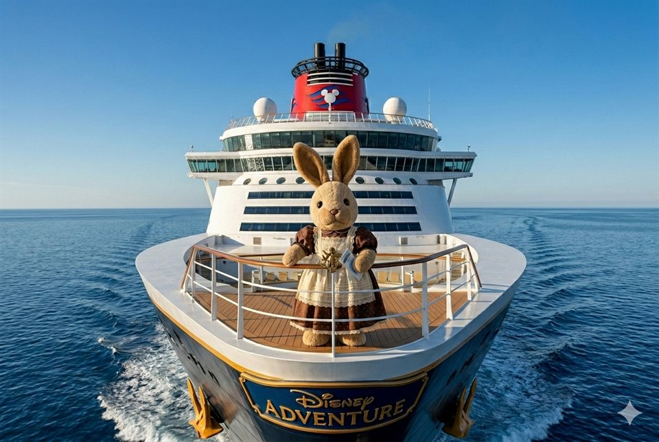

Disney Adventure
2027.01.25 — 01.28 4 大 3 小

家庭草案，非正式時刻表；集合、晚餐與主秀依本航次 Navigator。
ON BOARD / 船上
今天想去哪裡？
認識這艘船
- 船長
- 342 公尺
- 甲板
- 20 層
- 旅客容量
- 6,700 人
- 主題區
- 7 區
BEFORE WE SAIL / 出發前
2027.01.25 — 01.28 4 大 3 小

家庭草案，非正式時刻表；集合、晚餐與主秀依本航次 Navigator。
ON BOARD / 船上
BEFORE WE SAIL / 出發前